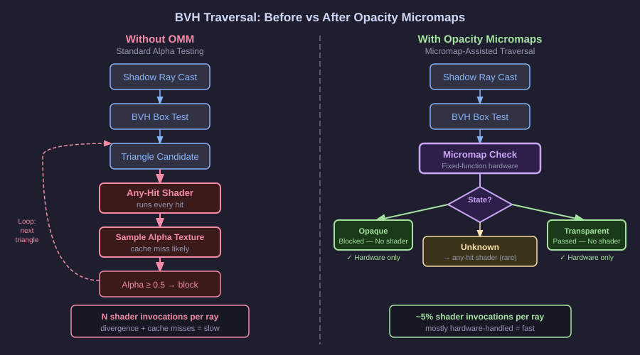
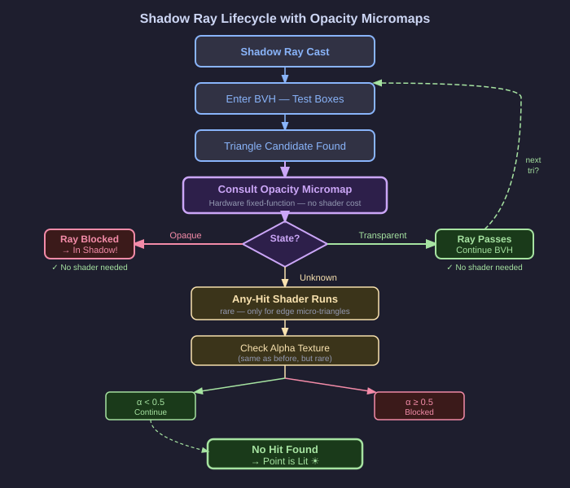

Inside the Traversal: How the GPU Uses Your Micromap
Two Journeys for One Shadow Ray
The best way to understand what Opacity Micromaps do at runtime is to follow a single shadow ray through both worlds — first the world without OMMs, then the world with them — and observe exactly where the work happens and where it disappears.

The Journey Without OMMs
Our shadow ray is cast from a surface point on the ground directly below a tree canopy. Its target is a sample position on the area light above. The ray enters the BVH.
First, it tests the top-level bounding box of the entire scene and finds it intersects. It descends into the scene’s sub-nodes, testing bounding boxes at each level. The non-leaf geometry — the trunk, the ground, a nearby wall — is quickly excluded by the BVH. The ray’s path passes through the bounding box region containing the leaf canopy. Several hundred leaf triangles live in this region.
At the leaf level of the BVH, the traversal begins testing individual triangles. The ray intersects the bounding box of the first candidate leaf cluster. Several leaf triangles are candidates. For each candidate, the traversal hardware determines that the geometry is flagged as alpha-tested. It cannot commit the hit automatically. It invokes the any-hit shader.
The any-hit shader runs. It receives the barycentric coordinates of the intersection. It interpolates UV coordinates. It issues a texture sample request. The texture unit processes the request — likely a cache miss, since this is the first frame and the cache is cold. The sample returns. The shader compares the alpha value to the material’s cutoff threshold. The alpha is 0.02 — this is empty space between leaves. Traversal continues.
The next candidate: another leaf triangle. The any-hit shader fires again. UV interpolation, texture sample (another miss), comparison. Alpha is 0.87 — solid leaf. The hit is committed. The ray is blocked. The shadow query returns "in shadow."
But that was two any-hit shader invocations just for this one ray, and most shadow rays in a forest scene will encounter more. A ray traveling at a shallow angle through the canopy might test eight, twelve, or more leaf triangles before finding a solid hit or exiting the tree. Each test: a shader invocation, a texture sample, a decision.
Multiply by 16 shadow rays per pixel. Multiply by millions of pixels. The any-hit shader is the most frequently invoked shader in the entire frame.
The Journey With OMMs
The same shadow ray is cast. The BVH traversal proceeds identically — micromaps do not change the BVH structure or the bounding box hierarchy. The ray reaches the leaf geometry region and begins testing candidate triangles.
The first candidate leaf triangle is an alpha-tested mesh, but this time it has an attached micromap. The traversal hardware computes the intersection point’s barycentric coordinates as before. Then — still in fixed-function hardware, without any shader involvement — it looks up the micro-triangle that contains this intersection point. The micro-triangle is classified Transparent. The hardware discards the hit immediately. No shader fires. No texture sample. Traversal continues in a fraction of the time.
The second candidate: the hardware checks the micro-triangle. Opaque. The hit is committed immediately. No shader fires. No texture sample. The ray is blocked. Shadow query returns "in shadow."
Total any-hit shader invocations for this ray: zero. The hardware resolved everything.
For a different ray that happens to land precisely on the leaf edge region — in an Unknown micro-triangle — the any-hit shader does fire. But this is the exception, not the rule. For a well-subdivided leaf texture, this happens for perhaps one in twenty ray-leaf intersections, not nineteen in twenty.
How the Hardware Reads the Micromap
The micromap data is stored in GPU memory as a densely packed array of 2-bit values, in a format the traversal hardware can address directly given a base pointer, a stride, and a subdivision level. When the BLAS is built with a micromap attached, the acceleration structure stores a reference to this data alongside the geometry.
During traversal, when the hardware identifies a candidate triangle intersection, it performs a micro-triangle lookup that is essentially an index calculation: given the barycentric coordinates of the hit point and the subdivision level, compute which micro-triangle the point falls within, then read the 2-bit state from the array. This computation is simple integer arithmetic — no general-purpose shader, no texture fetch from a separately managed resource. It is part of the fixed-function traversal unit, the same circuit that tests bounding boxes and computes intersection distances.
This is what it means for the hardware to provide hardware-accelerated opacity evaluation. The micromap is not a compute buffer that a shader reads. It is metadata embedded in the acceleration structure, readable by the traversal hardware itself.
Under VK_KHR_opacity_micromap, the micromap is represented not as a separate object type but as a standard VkAccelerationStructureKHR created with type VK_ACCELERATION_STRUCTURE_TYPE_OPACITY_MICROMAP_KHR. This unification with the standard acceleration structure object is a deliberate design choice in the KHR extension: it means the micromap participates in the same memory model, barrier rules, and lifetime management as all other acceleration structures in the scene, rather than introducing a parallel hierarchy of objects.
The OpacityMicromapKHR Execution Mode
In VK_KHR_opacity_micromap, the hardware micromap fast-path for ray queries is not automatic. The shadow shader must explicitly declare the OpacityMicromapKHR SPIR-V execution mode, defined by SPV_KHR_opacity_micromap, to signal to the traversal hardware that it should consult the micromap data. In GLSL this declaration looks like:
layout(constant_id = N) gl_EnableOpacityMicromapExt;where N is a specialisation constant ID. This declaration is required by the SPV_KHR_opacity_micromap SPIR-V extension: if a ray query shader traverses acceleration structures that contain opacity micromaps but does not declare OpacityMicromapKHR with a value of true, the SPIR-V specification mandates undefined behavior — not a graceful fallback to the any-hit path. Do not rely on any particular outcome from omitting the declaration. The declaration makes the hardware intent unambiguous and allows drivers and compilers to reason about traversal behavior correctly.
The Cascade Effect on Warp Efficiency
Recall from the previous chapter the problem of divergence: when different threads in a warp take different code paths, the warp serializes. Alpha-tested geometry was a chronic source of divergence because the any-hit shader fired with different outcomes for different rays.
With OMMs, this divergence is dramatically reduced. Most ray-leaf intersections never reach a shader. The threads that would have diverged on "did we hit solid or transparent?" now never reach that decision in a shader context — the hardware makes the decision silently, in a unified fixed-function path, before the shader even knows a candidate intersection existed. Threads whose rays pass through transparent micro-triangles stay synchronized with threads whose rays hit nothing, because both paths are zero-cost hardware operations.
The any-hit shader still fires for Unknown micro-triangles, and divergence can still occur there. But the fraction of invocations that trigger this path is small enough that the warp efficiency improves substantially. In a typical foliage-heavy scene, moving from no OMMs to well-classified OMMs can reduce any-hit shader invocations by 80 to 95 percent. The warp efficiency gains are proportionally significant.
The Multiplier Effect for Soft Shadows
The performance benefit of OMMs scales with the number of shadow rays per pixel. For hard shadows — one ray per pixel — the saving is real but bounded. For soft shadows with 16 samples per pixel, the saving multiplies by 16. This is one of the most important practical implications of the technique.
Soft shadows are among the most visually compelling features of ray-traced rendering. They are also among the most expensive, because cost scales directly with sample count. Anything that reduces the per-ray cost of shadow queries has a multiplied impact on soft shadow performance. OMMs are therefore most impactful precisely in the rendering modes that matter most for visual quality: high-sample-count soft shadows under foliage.
There is also a subtler cache benefit at play. When 16 shadow rays from nearby pixels all test the same leaf triangles (which they tend to do, since nearby pixels see nearby geometry), the micromap data for those triangles is already warm in the GPU’s L1 and L2 caches from the first few rays. The micromap lookup for subsequent rays is nearly free in memory terms. The alpha texture, by contrast, would need to be fetched every time and is less likely to stay warm given the potentially varying UV coordinates of different rays.
The Shadow Ray Lifecycle, Complete

The complete lifecycle of a shadow ray in an OMM-enabled scene can be summarized as a decision tree. The ray enters BVH traversal. For each candidate triangle intersection, the hardware checks for an attached micromap. If no micromap is present (non-alpha-tested geometry), it uses the standard opaque-geometry path: commit the hit immediately. If a micromap is present, it looks up the micro-triangle state. Opaque: commit, no shader. Transparent: discard, no shader. Unknown: invoke the any-hit shader and let the shader make the final call.
This decision tree lives entirely in fixed-function hardware for the Opaque and Transparent branches. Only the Unknown branch enters programmable execution. The result is that the GPU’s shader execution units are freed from the overwhelming majority of alpha-testing work and can focus on the cases that genuinely require a shader. In VK_KHR_opacity_micromap, reaching this optimized path also requires that the shader has declared the OpacityMicromapKHR execution mode. Omitting that declaration when the acceleration structures contain opacity micromaps results in undefined behavior per the SPIR-V specification — the hardware and the shader must both be in agreement for correct results.